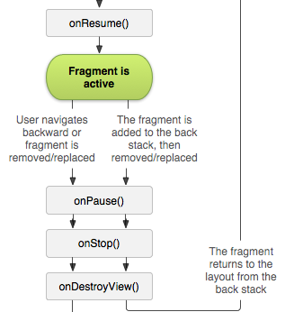
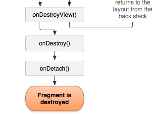
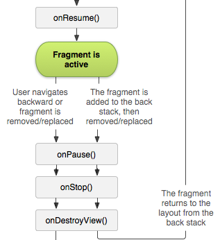
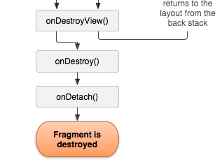
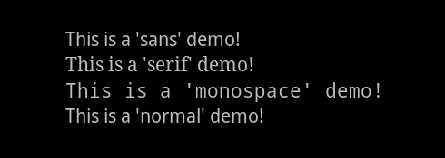

ANDROID DEVELOPMENT
Fragments
What are fragments?
A Fragment represents a portion of user interface in an Activity. You can combine multiple fragments in a single activity to build a multi-pane UI and reuse a fragment in multiple activities. You can think of a fragment as a modular section of an activity, which has its own lifecycle and which you can add or remove while the activity is running (sort of like a "sub activity" that you can reuse in different activities).
The Fragment Lifecycle
Like mentioned before, each fragment has its own lifecycle. It doesn't follow the onCreate()-to-onDestroy() lifecycle of its parent Activity.
 



Steps in creating and using fragments:
When we are NOT using fragments, there is a single activity- MainActivity.java + activity_main.xml. All we need to do is design this xml file and the setContentView(int) command inflates the xml layout onto the screen.
But, when we are using Fragments, there are a few more steps in this process.
First step is to create an Activity and its corresponding xml layout. (the usual stuff)
This xml layout needs to have what we call the 'fragment space'. This is the frame or space into which we will be inflating the fragment views. For example, a fragment space can be a FrameLayout.
Next, we need to create as many xml layouts as the number of different fragment views we need.
Next, we need to create as many Fragment Classes as the number of different fragment views we need.
This Fragment class + its xml layout is similar to MainActivity + activity_main
Fragment Classes
Like how MainActivity extends a class called 'Activity' or 'ActionBarActivity', we need to create classes that extend the class Fragment.
It is inside this class that the fragment lifecycle functions are defined.
A simple Fragment class implements just the onCreateView() function.
FragmentManager and FragmentTransaction
These are the two classes that are to be used whenever we want to inflate a particular Fragment Class in a fragment space.

Put all this together and you'll create an app with fragments.
The default font for text in Android is 'Roboto'
It is possible to change the typeface for text in the layout xml file.
This is done through-
android:typeface="..."
The possible options are:
normal
sans
serif
monospace

To use a custom font, that is, to use a .ttf file that you have, we need to import that file into the assets folder inside your project.
If this folder doesn't already exist, create it in the same directory as the res folder.
Now place your font files inside this folder.
Setting this font to a View has to be done in the java file.